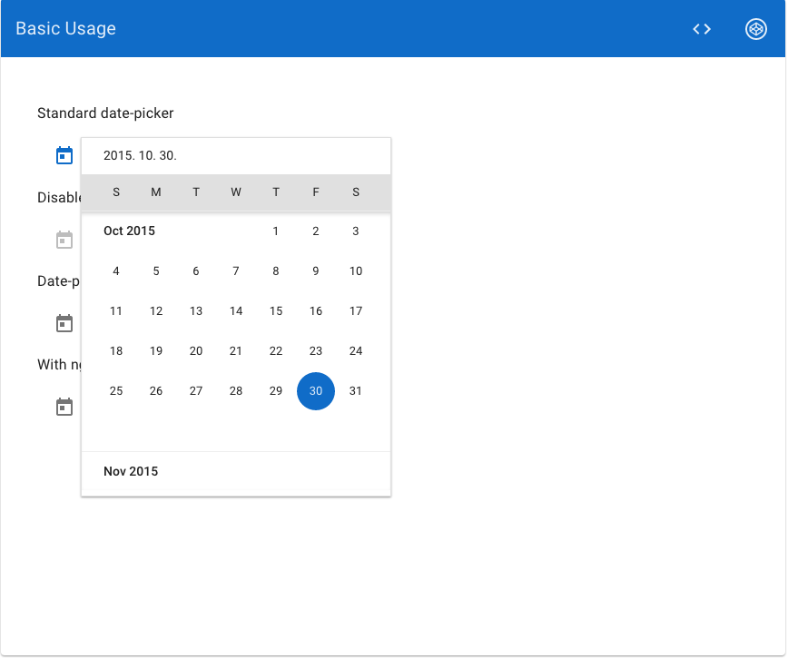

웹 개발
이렇게 하니 괜찮더라
PLATFORM
- MEAN(Mongodb, express, angularjs, nodejs) stack 을 많이 사용
- APM(Apache, Php, Mysql) 의 진화버전쯤 되는듯
- toy building 정도로 좋지만 좋은 서비스를 위해서는 웹서버, 데이터베이스가 필요하게 됨
- 요즘은 REST 스타일로 개발을 하니 서버와 클라이언트가 분리되어 있음
- 서버는 사용처에 따라 혹은 취향에 따라 사용하면 됨
- galleon, barrel, golden retriever 구조처럼 MSA(Micro Service Architecture) 도 많이 사용 됨
- 하지만 결합도가 올라가니 관리하는 헬게이트가…
- 관리도 어렵지만 개발버전 하나 띄우려면 뭐가 이렇게 할게 많아…
- 그래서 docker 가 떠오르고 있음(뒤에서 설명)
- 클라이언트는 개인적으로 angular.js 가 아직은 가장 좋다고 판단 됨
- two way data binding, directive
NGINX
- 장점
- reverse proxy를 이용하여 http 서버로 바로 붙는 것을 방지
- Load banancing(scale out)
- Static file serving(cache)
- 웹서버를 쓰면 성능과 보안에 좋다
- 단점
- machine 이 달라지므로 shared resource 에 대해서는 대책이 필요하다
- 대표적으로 session 을 서버 메모리에 관리하기때문에 nginx 의 분산을 sticky 로 설정하던지
- REDIS 같은 별도의 in-memory database 를 사용하던지 한다
- nodejs 는 프로세스를 forking 하는 구조로 퍼포먼스를 향상시키기 때문에 redis 를 많이 사용한다
REDIS
- 서버가 여러대니 session을 redis에 저장
- redis 는 in-memory database 이고 session 을 위한 연산은 O(1) 퍼포먼스이므로 좋다
- 근데 redis 는 single thread 이고 분산 된 환경에서 atomic 연산을 지원하지않음
- 망할 CAP 이론…
- 하지만 우린 그렇게 까지 쓸일이 없으니까 빵빵한 장비를 믿고 가기로 한다
- 일관성, 가용성, 분단가용성을 동시에 지원하는 데이터저장소는 없다
- 취향과 목적에 따라 골라 쓰세요

DATABASE
- ORM 을 사용하는게 좋다
- ORM에서 지원하는 database 를 사용하는게 좋다
- where, join 이 들어간 string 을 빌딩하는데 지옥이 펼쳐질 테니까…
- 아니면 sql building 하는 라이브러리를 사용하는게 좋다
- 쿼리튜닝은 전문가에게…(explain keyword 사용)
- 백업은 자주 하는게 좋다
- 백업을 docker 로 관리하는 것도 좋은듯
REST
- 웹만 있었을 때는 서버에서 직접 html 을 rendering 했다
- 모바일이 떠오르니 이걸 대응을 하긴 해야겠고.. 그래서 접속 기기를 보고 모바일이면 모바일 페이지를 렌더링 해주기로 함
- 개발하다보니 똑같은걸 두번하는거같아서 이게 아닌것 같다는 생각을 하게 된다.
- 반응형 웹을 만들자
- 서버에서는 동일한 내용을 렌더링 해주고 front-end 에서 media query 를 이용하여 반응형 웹을 만듦
- 그런데 모바일은 웹 속도가 형편없네.. 느려서 불편하다
- 그럼 native app 을 만들자
- native app은 html 안써.. 서버는 데이터만 줘
- 그럼 웹으로 들어올때는 html 을 렌더링 해주고
- native app 모바일로 들어온 유저에게는 json 을 줄게
- 무언가 이상한건 기분 탓이겠지
- 이렇게 된 이상 REST 로 간다(개념은 2000년 로이필딩에의해 처음 제안됨 - 박사논문)
- 이때 한창 웹 통신에서 SOAP 와 REST 결투중 REST 가 우세 했고
- angularjs 가 떠오르고 있었고
- mobile native app 이 성행했는데
- REST, angular, native app 3박자가 잘맞으니 모두가 편안해짐
- front-end 개발자들은 html 에 로직이 들어와 영 불편해 함
- 저는 이책으로 공부했어요
- 뒤에 Atom 부터는 좀 이상한것 같고 4장 까지만 봐도 괜찮은듯
(LE|SC|SA)SS
- CSS 작업은 정말 노가다와 같아서…
- (LE|SA|SC)SS 를 사용하지 않으면 지옥이 펼처짐
- 변수, 선택자 상속, 중첩, 믹스인, 임포스, 제어문등을 제공해서 훨씬더 손쉽게 코드를 작성하게 해준다
- 근데 저걸 사용해도 지옥같으니
- bootstrap 을 사용합시다. bootstrap 짱짱맨
- 저걸 사용하려면 css 로 변환하는 기능이 필요함
- file watching 기능을 사용하면 수정마다 자동으로 빌드해놓게 설정해서 사용하면 편함
- nodejs 에서는 gulp 와 grunt 가 있음
BOWER
-

- 나도 저런 깔끔한 달력 입력 인터페이스 하나 넣고싶다
- 저걸 html/css 로 만들겠어!!
- 라고 다짐한 한 후 많은 시간을 버리게 되겠지..
- 어렵고 시간이 많이 걸리는일은 잘 만들어진 것들을 찾아 쓰는게 이득!
- (하지만 디테일의 완성도는 css 를 직접 손질해야...)
- 하나둘 라이브러리를 가져다 쓰다보니…
- 점점 수가 많아졌고 일관성을 위해서 클라이언트 파일들을 VCS 에 넣어서 보관했다
- 어느날 문득보니 서버사이드에서는 이런 경험(삽질)이 많아서 보통 패키지매니저를 통해 관리를 하고 있었다
- 그래서 front-end side 도 이런게 있으면 좋겠다 싶었는데 bower가 나와서 인기를 끌게됨
- 보통 라이브러리를 다운받고 복사하고 header 에 script 태그를 심어줬는데
- bower install 과 script 태그만으로 이용이 가능해졌으니 조금더 간단 해짐
- 대부분은 github 에 있고 search 명령으로 그럴싸한 이름의 라이브러리를 찾는것도 가능해짐
- 이렇게 bower.json 만 있으면 파일을 VCS에 넣을 필요도 없고 한눈에 보기도 쉽고 설치도 쉽게 할 수 있다
- 근데 구조상 문제가 되는게 있었으니 그거슨 전역변수 와 버전충돌
- 대부분의 front-end 라이브러리들은 window 객체에 자신의 변수를 심어놓음
- 라이브러리가 많아지면 namespace 가 충돌할 수 있음(하지만 ‘$’는 아무도 건들지 못하겠지..)
- 그래서 보통 no conflict 라는 옵션으로 namespace 를 변경할 수 있도록 함
- bower 는 dependency 충돌을 막을 수 없음(클라이언트사이드의 한계)
- 근데 해보니 별로 걱정 안해도 됨. 어차피 유명한애들은 많이 쓰니까 알아서 잘 피해감
- 또 오픈소스라서 다른 버전과의 호환성문제도 금방금방 해결되는 것 같음
결론
- 라이브러리를 받아서 VCS에 저장하든 bower를 큰 차이는 없는것 같다
- 개인적으로는 설치는 bower 로 하고 필요한 파일을 복사해서 VCS 로 관리하는게 깔끔하고 좋은것 같다
- 최근 commonjs 스타일로 font-end의 모듈화를 도와주는 webpack 과 browerify 가 있는데 이것은 아직 시기상조 인듯하다
DEPLOY
- 배포는 서버사이드의 일이므로 각 플랫폼에 맞에 알아서 잘…
- javascript/css/image 크기가 크면 response time 이 떨어지므로
- concatify, uglify, gridify 등 static 파일크기를 줄이거
- http connection을 최소화 하는 단계가 필요하다
- (LE|SA|SC)SS 빌드도 필요함
- 주의할점
- js/css/image는 static 파일이므로 nginx 가 처리하게 되는데
- caching 지옥에 빠지면 고통받으니 뭔가 이상하다 싶으면 cache 를 의심하세요
- 만약 CloudFront 같은 CDN 서비스를 사용한다면 더욱더 지옥같을 거에요
- 그래서 build 된 js, css 에 pinger print 를 붙여서 다른파일로 인식되도록 하기도 합니다
- 최근에는 docker 를 이용해 container 별로 관리
- 웹서버, 웹어플리케이션서버, 레디스, 데이터베이스별 컨데이너가 존재
- 스크립트로 잘 연결시키면 복잡한 MSA도 한방에 launch!
- 더군다나 이미지 별로 관리가 되기때문에 개발자간에 database 안에 들어있는 데이터를 동기화 하기에도 매우 좋음
- 프로세스를 잘 만들어 놓는다면 좋을것 같음
TEST
- 서버사이드는 각각의 플랫폼에 맞는 테스팅 툴을 사용
- angular.js 는 karma 를 사용하여 테스트케이스 작성
- E2E 테스트를 하고싶다면 selenium 을 사용
- 최근에는 selenium 을 이용한 브라우저별 테스트 자동화 클라우드 서비스도 존재함(https://www.browserstack.com/automate)
- 개인적으로는 클라이언트 사이드 테스트는 공통의 데이터 처리영역 수준에서 마무리 하는게 좋다고 생각
- UI 테스트는 방법이 애매할 뿐더러 자주 바뀌기 때문에 테스트케이스를 작성하기에 애매한 부분이 있음